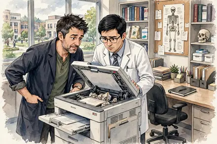

第6話・全9章・完結
麻衣のいない一週間
法医解剖医コメディ ・ 約6,964字 ・ 読了 約15分
麻衣が有給で一週間不在。完璧な引き継ぎを残しても、教室は回らない。
第1章 有給命令
金曜日の夕方だった。
教授室から戻ってきた会田麻衣は、いつもと違う顔をしていた。手には一枚の紙。有給休暇の申請書だった。
「……先生方に、お知らせがあります」
五十嵐俊介は飴を転がしながら顔を上げた。相沢直樹はメモ帳を開いた。
「来週の月曜日から金曜日まで、私、有給をいただくことになりました」
「は？」
俊介の飴が止まった。
「郷田先生のご指示です。『溜まっている有給を消化しなさい』と」
「待って。麻衣ちゃんがいない一週間、ここの教室、どうなんの」
「回していただくんです」
「無理無理無理。電話は誰が取るの。書類は誰が作るの。コピー機が詰まったら誰が直すの」
「五十嵐先生と、相沢先生と、郷田先生です」
「人員補充どころか、人員が減るやん」
「一週間だけです」
「俺は解剖専門。相沢くんはメモ専門。教授は教授専門。三人とも事務は素人やで」
相沢が恐る恐る手を挙げた。
「あの、私、電話くらい取れます」
「取るだけならな。転送できる？ 保留にできる？ FAX送れる？」
「……練習します」
麻衣は申請書を郷田の机の端に置いた。実は麻衣自身、最初は断ったのだ。「私がいないと回りません」と。郷田は眼鏡の奥から静かに言ったという。
――回らないなら、それは教室の欠陥だ。一人の事務員に全てを預けている方が、異常なんだよ。
正論だった。しかも痛いところを突く正論だった。命じたのは郷田本人である。つまり一週間、教室がどれだけ騒ぎになろうと、郷田は文句を言えない。
「教授も、覚悟の上ってことか」
俊介は飴を噛み砕いた。
「まあ、一週間くらい。なんとかなるやろ」
根拠のない自信だった。麻衣は小さく息を吐いた。
「……引き継ぎは、完璧にしていきます」
第2章 引き継ぎ
土曜日の教室に、麻衣は一人でいた。
引き継ぎのバインダーは、夕方には四冊になっていた。電話の転送の手順。FAXの宛先一覧。報告書の様式と送付先。宅配便の受け取り方。ゴミの分別と収集日。コピー機の紙詰まりの直し方まで、写真付きで書いてある。
「ここまで書けば、大丈夫なはず」
コピー機の手順には、自分で撮った写真を貼った。トレイの開け方、詰まった紙の在りか、エラーの解除ボタン。文章だけでは伝わらないと思ったからだ。ゴミの収集日は、学内の掲示板で三回確認した。
最後に麻衣は俊介の机にも手を伸ばした。書類の山。外から見ればただの山だが、麻衣には分かる。これは俊介なりの順番なのだ。麻衣は順番を変えずに、山の輪郭だけをきちんと揃えた。いつも通りに。
「……一週間、この山がどうなるか」
少し心配で、少しだけ、楽しみでもあった。
日曜日の夕方、麻衣は駅に向かった。実家の静岡まで、新幹線で一時間ほど。教室の電話は、月曜から金曜まで、自分の携帯にはかかってこないはずだ。
「本当に困った時だけ、電話して」
金曜日にそう言い残した。困った時、の基準は言わなかった。言えば、月曜の朝一でかかってくる気がしたからだ。
新幹線の窓から、夕方の街が流れていく。麻衣は携帯を鞄の奥にしまった。
――大丈夫。引き継ぎは完璧なんだから。
自分に言い聞かせるように、一度だけ呟いた。
第3章 月曜日
月曜日は、コピー機から始まった。
「詰まりました」
相沢の声に、俊介がバインダーをめくる。「コピー機・紙詰まり」のページ。写真付きの手順は懇切丁寧だった。トナーを交換し、用紙トレイを開け、詰まった紙を「ゆっくり、まっすぐ」引き抜く。
「ゆっくり、まっすぐ……」
紙は真ん中で破れた。
「破れました」
「見れば分かる」
破れた紙の残りをピンセットでつまみ出す作業に、三十分かかった。その間に電話が四回鳴った。相沢は三回目で保留のまま別の回線を取ってしまい、四回目は転送に失敗して切れた。
「……すみません」
「謝る暇あったらバインダー」
FAXは宛先を一桁間違えて、見知らぬ会社に解剖予定表を送りかけた。俊介が送信音の直前に気づいて止めた。
昼、宅配便が届いた。受け取りの印鑑は麻衣の机の二段目の引き出し。誰も知らなかった。バインダーの九ページ目に書いてあった。
午後にはゴミの日だった。月曜は燃えるゴミの日。俊介が意気揚々と袋を三つ運び出したが、そのうち一つは資源ゴミだった。収集場所で近所の主婦に丁寧に注意され、解剖の天才は深々と頭を下げた。
「……俺の能力、だいぶ偏ってるな」
「今さらですか」
夕方には大学の事務局から電話が来た。「会田さんは？」と聞かれて相沢が「一週間おりません」と答えると、相手は露骨に不安な声になった。「では、どなたに確認すれば」「私です」と相沢は言った。言ってから、自分で少し不安になった。
郵便物も三人には難物だった。学内の部署名の略称が分からない。「法医」は自分たちだが、「病理」「公衛」「医情」がどこを指すのか、バインダーにも載っていなかった。唯一、麻衣が当たり前に回していた仕事だった。
昼休みは、じゃんけんで電話番を決めた。負けたのは俊介だった。
一人で留守番をする解剖の天才のところへ、よりによって教授宛の電話が来た。転送の手順はバインダーの二ページ目。俊介は慎重にボタンを押した。一つ目、二つ目――三つ目で、手が滑った。
電話は切れた。相手は学長秘書室だった。
「……まあ、向こうも忙しいやろ。かけ直してくるやろ」
戻ってきた相沢に報告すると、相沢は無言でチェックリストに一行足した。「電話番は、なるべく五十嵐先生一人にしない」。
夕方、俊介は椅子に深く沈んだ。
「……まだ月曜か」
「はい。あと四日あります」
「相沢くん、慰め下手やな」
解剖はなかった。それだけが救いだった。
第4章 火曜日
火曜日、解剖が一件入った。
七十二歳の男性。自宅で倒れているのを、帰宅した妻が見つけた。事件性はないが死因の確認のため、司法解剖に回ってきた。
解剖室の俊介は、別人だった。昨日のコピー機の前で情けなく紙をつまんでいた男は、どこにもいない。手つきに迷いがなく、所見は的確で、相沢への指示は短く正確だった。
「心臓。冠動脈、かなり細くなってる。心筋梗塞で間違いない。静かで、速い死だったはずだ」
四十分で終わった。
問題は、その後だった。昼過ぎ、先週解剖した別の男性の妻が、予約もなく教室を訪ねてきたのだ。夫の解剖の結果を、直接聞きたいという。
「ええと、その、結果のご説明はですね、まず所定の手続きが……」
俊介はしどろもどろになった。申請書の種類、窓口の順番、警察経由の正式な開示。事務の言葉が、ひとつも出てこない。
見かねた相沢がバインダーを開く。「遺族対応」のページ。麻衣の字で、来訪者があった時の手順と、使ってはいけない言葉まで書いてあった。相沢は受付の用紙だけは手順通りに整え、妻を応接の椅子へ案内した。できることは、バインダーの中にはあったのだ。
俊介はページを一度読み、それから椅子を引いて、妻の前に座った。
「奥さん。ご主人の死因は、心臓の発作です。苦しんだ時間は、短かったはずです。倒れた時の状況とも、矛盾しませんでした」
事務の言葉は出なかった。でも、所見の言葉は正確だった。妻は何度か頷き、帰り際にふと聞いた。
「いつも電話で対応してくださった、会田さんは……今日は、お休みですか」
「ああ。一週間、休暇で」
「そうですか。あの方の声を聞くと、ほっとしたんです。……今日も、来るまでは緊張してて」
俊介は少し黙って、それから言った。
「あの子は、そういう仕事をしてるんです。俺らも今週、身に染みてます」
妻は「ありがとうございました」と頭を下げて帰っていった。
「……五十嵐先生」
「分かってる。俺、事務はあかん。でも解剖と所見は嘘つかん。それで許してもらお」
俊介は飴を一粒、口に入れた。
第5章 水曜日
水曜日の午前、警視庁から電話が来た。
月曜日に送った報告書の様式が、古いものだったのだ。現在の様式では、所見の要約欄と添付資料の目録が要る。麻衣は毎回、教室の様式から警視庁の様式へ黙って直して送っていた。それを誰も知らなかった。
電話の向こうは捜査一課の刑事で、その声の後ろから、もう一つの声がした。
『代われ。……五十嵐先生ですか。管理官の梶原です』
梶原誠。五十六歳、警視庁捜査一課の管理官。現場の叩き上げで、声を荒らげたところを誰も見たことがない、という男だった。
『様式の件、こちらでも処理が止まるんです。金曜までに、直したものを』
「いや、あの、こちらも人手が」
『では、そちらの事情を文書でいただけますか。管理官名で、こちらも上に説明が要りますので』
静かで、丁寧で、一歩も引かなかった。
『来月から、そちらへの依頼の割り振りも、見直す時期でしてね』
最後に、梶原は付け加えた。それが脅しなのか、ただの事務連絡なのか、声の調子だけでは分からなかった。俊介のいつもの冗談は、受け止められもせず、流された。
電話が切れて、相沢が小さい声で言った。
「……麻衣さんに、電話した方がいいんじゃ」
「あかん」
俊介は即答した。
「休ませた意味ないやろ。教授がせっかく『欠陥だ』まで言って休ませたんや。様式くらい、俺らで直す」
「直し方、分かりますか」
「……バインダーにあるやろ」
バインダーにはあった。様式の変換表が。ただし四冊目の、最後の方に。麻衣は、ここまで用意していたのだ。
「あの子、ほんまに完璧やな」
俊介は呟いて、変換表のページを開いた。
変換は三人がかりになった。相沢が旧様式の報告書を読み上げ、俊介が新しい要約欄に書き直す。要約欄は所見の圧縮だった。そこだけは、俊介の筆が迷わなかった。三日分の事実が、四行に正確に収まっていく。
「……先生、要約はお上手なんですね」
「当たり前や。所見は俺の仕事や」
「では、なぜ宛名の敬称で三回も間違えたんですか」
「……人間にはな、得手不得手っちゅうもんがな」
添付資料の目録を作り終えたのは、夕方だった。金曜の締め切りには、間に合いそうだった。
目録の用紙を探して、俊介は麻衣の机の二段目を開けた。用紙の隣に、赤ペンが一本転がっていた。ずいぶん短くなった一本だった。
「……あの子、この一本で回しとったんか」
俊介は引き出しを、そっと閉めた。
第6章 木曜日
木曜日、教室は相沢のチェックリストで回り始めた。
相沢は三日分の失敗を全部メモしていた。電話の転送は三回練習した。FAXの宛先は送る前に二人で読み合わせる。宅配の印鑑の場所は、付箋を貼った。コピー機の紙は、破らずに抜けた。チェックリストの項目は、木曜の朝の時点で二十三個になっていた。
「七割、というところでしょうか」
「上出来や。麻衣ちゃんが十割やっただけや」
昼、郷田がコピー機の前に立っていた。学会への提出書類を刷るためだった。印刷は途中で止まり、エラーランプが点いた。
郷田はバインダーを開いた。「コピー機・紙詰まり」。写真の通りにトレイを開け、手を入れる。しばらく格闘して、教授の手はトナーで黒くなった。白いシャツの袖口にも、黒い筋が一本ついた。
「……郷田先生、手伝いましょうか」
「いや。私が命じた休暇だ。私がやる」
意地だった。命じた側の意地だった。結局、紙は相沢が抜いた。郷田は黒い手を洗いながら、小さく言った。
「……会田くんの代わりは、いないな」
「ほんまに」
俊介は頷いた。笑いながら、少しだけ本気で頷いた。
夕方、帰り際に郷田が言った。
「私も、来年度で終わりだ。その前に、この教室の回り方だけは直しておきたくてな。……一人の肩に全部載った教室は、私がいなくなった途端に潰れる」
俊介は何も言わなかった。飴の袋をポケットの中で握った。
「だから、いい実験になったよ。七割でも回ることが分かった」
「教授。実験台にされた方は、たまったもんやないですよ」
「だろうね」
郷田は黒い筋の残る袖口を見て、少しだけ笑った。
第7章 金曜日
同じ頃、静岡の実家では、麻衣が縁側でお茶を飲んでいた。
帰って五日。最初の二日は、携帯を何度も見た。三日目から、見なくなった。母親のご飯を食べ、昼寝をして、夕方には近所を散歩した。父親は相変わらず朝から庭の畑に出て、夕方には獲れたての野菜を台所に置いていく。顔色が良くなったと、母親に言われた。
「あんた、こっちにいる間くらい、仕事のことは忘れなさい」
「忘れてるよ」
「じゃあ聞くけど」
母親はみかんを剥きながら、何気なく言った。
「ええ人、できたの？」
麻衣のお茶が、少し止まった。
「……どういう意味」
「そのままの意味。あんた、もう二十六やろ。東京で、なんか、ないの」
「ないよ」
「ほんまに？」
「ほんまに。……お茶、おかわり淹れてくる」
麻衣は立って、台所に行った。やかんの湯が沸く音を聞きながら、窓の外を見る。できた、と言えば嘘になる。いない、と言い切るのも、どこか違う気がした。名前を付けるには、まだ早い。付けてしまったら、もう今のままではいられない気がして――。
その時、鞄の中で携帯が鳴った。教室の番号だった。
「……はい、会田です」
相手は相沢だった。声が少し慌てている。警視庁へ手渡しのはずだった資料が一式、教室のどこを探しても見当たらない、という。
「相沢先生、落ち着いて。私の机、左の一段目。青いクリアファイルです。先週、私が入れておきました」
電話の向こうで、引き出しの音。少しして、相沢のほっとした声。
「ありました……！ すみません、お休み中に」
「いいんです。それ、私が言い忘れたことですから」
背景で、コピー機のエラー音と、もう一台の電話の呼び出し音が聞こえた。俊介の声も遠くでする。「相沢くん、それ誰」「麻衣さんです」「え、なんで電話を――」。
受話器が替わった。
「……麻衣ちゃん」
「はい」
「あのな、その、資料の件は分かった。あとは大丈夫や」
「そうですか」
「うん。……月曜、待ってるから」
それだけ言って、電話は切れた。感謝の言葉はなかった。でも麻衣は、受話器を置いて、少しだけ笑った。「待ってる」は、あの人の精一杯だった。
麻衣は何も言わなかった。言う代わりに、電話を切った後、様式の変換で困っているはずの報告書の雛形を、教室のアドレスへメールで送り直しておいた。件名は付けず、本文には一行だけ。
――念のため、最新版です。
第8章 週末
土曜日の教室には、誰もいなかった。
俊介は昼前にふらりと現れた。解剖の予定はない。机の書類の山と向き合って、しばらく腕を組んだ。
月曜日からの五日間、山は少し崩れた。自分で崩して、自分で積んだからだ。順番は、もう元の通りではない。
俊介は一番上の書類を手に取った。次に、その下を。麻衣がいつもそうしていたように、順番は変えず、輪郭だけを揃える。角と角を、とんとんと机で合わせる。五日間見てきた手つきを、思い出しながら真似た。
下手くそだった。でも、山は少しだけ、麻衣の山に似た。
ついでに、給湯室で自分の茶を淹れた。麻衣はいつも、解剖の後の俊介には少し濃いめの茶を出す。それを真似てみたが、濃すぎて飲めなかった。味の加減も、あの子の仕事のうちだったらしい。
帰りがけ、俊介は駅前の文房具屋に寄った。赤ペンを、二本。会計の時、店員に「詰め替えですか」と聞かれて、「いや、新品で」と答えた。
月曜日の朝、教室は静かだった。麻衣の机は、金曜日に彼女が出ていった日のままだった。埃ひとつ、余計な物ひとつ、増えていなかった。
第9章 帰還
月曜日の朝八時五十分、教室のドアが開いた。
「おはようございます」
会田麻衣が立っていた。少しだけ日焼けして、顔色が良くなって、大きな紙袋を抱えていた。
「静岡のお土産です。お茶と、みかんのお菓子」
郷田がお茶の包みを手に取り、珍しく頷いた。
「……静岡の茶は、うまい」
相沢は一週間のチェックリストを麻衣に見せた。失敗の記録と、直した手順が、几帳面に並んでいた。
「私なりに、まとめておきました。来週から、電話の転送は私もできます」
「ありがとう、相沢先生」
麻衣がそう言うと、相沢は照れたようにメモ帳をしまった。
「おお、麻衣ちゃん、おかえり」
俊介は立ち上がりかけ、何か言いかけて、やめた。
「……あれや。コピー機、新しいの、郷田先生に言うといたから」
「そうなんですか」
「うん。来年度の予算で。たぶん」
相沢が横で「初耳です」と言いそうになって、やめた。麻衣は小さく笑って、自分の机に座った。机は、出ていく日のままだった。引き出しを開ける。一段目、二段目。
二段目の奥に、赤ペンが二本、新品のまま並んでいた。
麻衣はペンを一本、手に取った。誰が入れたのか、聞かなかった。聞かなくても、分かった。
その時、コピー機が甲高い音を立てた。紙詰まりだった。一週間、男三人を苦しめ続けた、あの音だった。
麻衣は立ち上がり、トレイを開け、詰まった紙をゆっくり、まっすぐ引き抜いた。十秒かからなかった。
「……一週間、俺ら何やってたんやろ」
俊介が呟いた。麻衣は紙を丸めてゴミ箱に放り、振り返って言った。
「おかげで、よく休めました」
それが、帰ってきた麻衣の、最初の仕事の言葉だった。
麻衣は席に戻り、新しい赤ペンを一本取った。その日最初の書類に、迷いのない字で書き込んでいく。赤は、よく映えた。
「そういえば、麻衣ちゃん」
俊介が、飴を転がしながら言った。
「人員補充の件、教授に聞いてくれた？」
麻衣は顔も上げずに答えた。
「聞きました。『検討する』そうです」
「それ、先月も聞いた」
「先々月もです」
いつものやり取りだった。一週間ぶりの、いつもの教室だった。
― 完 ―
読んでくださって、ありがとうございます。
一言でも構いません、感想をいただけると励みになります。